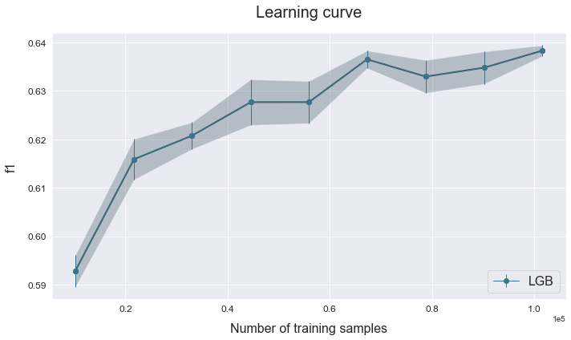

Train sizing
This example shows how to asses a model's performance based on the size of the training set.
The data used is a variation on the Australian weather dataset from https://www.kaggle.com/jsphyg/weather-dataset-rattle-package. The goal of this dataset is to predict whether or not it will rain tomorrow training a binay classifier on target RainTomorrow.
Load the data
# Import packages
import numpy as np
import pandas as pd
from atom import ATOMClassifier
# Load the Australian weather dataset
X = pd.read_csv('./datasets/weatherAUS.csv')
# Let's have a look at a subset of the data
X.sample(frac=1).iloc[:5, :8]
| Location | MinTemp | MaxTemp | Rainfall | Evaporation | Sunshine | WindGustDir | WindGustSpeed | |
|---|---|---|---|---|---|---|---|---|
| 3118 | BadgerysCreek | 11.7 | 23.2 | 0.0 | NaN | NaN | SW | 28.0 |
| 18965 | NorahHead | 10.2 | 19.4 | 0.0 | NaN | NaN | SSE | 30.0 |
| 11196 | CoffsHarbour | 9.7 | 21.2 | 0.0 | NaN | NaN | NW | 26.0 |
| 62283 | Sale | 8.4 | 21.7 | 0.0 | NaN | NaN | WSW | 41.0 |
| 92461 | Townsville | 11.1 | 27.1 | 0.0 | 7.6 | 10.7 | ENE | 37.0 |
Run the pipeline
# Initialize ATOM and prepare the data
atom = ATOMClassifier(X, verbose=2, random_state=1)
atom.impute(strat_num='median', strat_cat='most_frequent', min_frac_rows=0.8)
atom.encode()
<< ================== ATOM ================== >>
Algorithm task: binary classification.
Applying data cleaning...
Dataset stats ================= >>
Shape: (142193, 22)
Missing values: 292032
Categorical columns: 5
Scaled: False
----------------------------------
Size of training set: 113755
Size of test set: 28438
----------------------------------
Class balance: No:Yes <==> 3.5:1.0
Instances in RainTomorrow per class:
| | total | train_set | test_set |
|:-------|---------:|-------------:|------------:|
| 0: No | 110316 | 88263 | 22053 |
| 1: Yes | 31877 | 25492 | 6385 |
Fitting Imputer...
Imputing missing values...
--> Dropping 15182 rows for containing less than 80% non-missing values.
--> Imputing 100 missing values with median in feature MinTemp.
--> Imputing 57 missing values with median in feature MaxTemp.
--> Imputing 640 missing values with median in feature Rainfall.
--> Imputing 46535 missing values with median in feature Evaporation.
--> Imputing 53034 missing values with median in feature Sunshine.
--> Imputing 4381 missing values with most_frequent in feature WindGustDir.
--> Imputing 4359 missing values with median in feature WindGustSpeed.
--> Imputing 6624 missing values with most_frequent in feature WindDir9am.
--> Imputing 612 missing values with most_frequent in feature WindDir3pm.
--> Imputing 80 missing values with median in feature WindSpeed9am.
--> Imputing 49 missing values with median in feature WindSpeed3pm.
--> Imputing 532 missing values with median in feature Humidity9am.
--> Imputing 1168 missing values with median in feature Humidity3pm.
--> Imputing 1028 missing values with median in feature Pressure9am.
--> Imputing 972 missing values with median in feature Pressure3pm.
--> Imputing 42172 missing values with median in feature Cloud9am.
--> Imputing 44251 missing values with median in feature Cloud3pm.
--> Imputing 98 missing values with median in feature Temp9am.
--> Imputing 702 missing values with median in feature Temp3pm.
--> Imputing 640 missing values with most_frequent in feature RainToday.
Fitting Encoder...
Encoding categorical columns...
--> Target-encoding feature Location. Contains 45 unique categories.
--> Target-encoding feature WindGustDir. Contains 16 unique categories.
--> Target-encoding feature WindDir9am. Contains 16 unique categories.
--> Target-encoding feature WindDir3pm. Contains 16 unique categories.
--> Label-encoding feature RainToday. Contains 2 unique categories.
# We can analyze the impact of the training set's size on a LightGBM model
atom.train_sizing('lgb', train_sizes=np.linspace(0.1, 1, 9), bagging=4)
Running pipeline ============================= >>
Models in pipeline: LGB
Metric: f1
Run 0 (10% of set) ============================>>
Size of training set: 11375
Size of test set: 28438
Results for LightGBM:
Fitting -----------------------------------------
Score on the train set --> f1: 0.8029
Score on the test set --> f1: 0.6086
Time elapsed: 0.998s
Bagging -----------------------------------------
Score --> f1: 0.5945 ± 0.0073
Time elapsed: 2.229s
-------------------------------------------------
Total time: 3.242s
Final results ========================= >>
Duration: 3.244s
------------------------------------------
LightGBM --> f1: 0.594 ± 0.007 ~
Run 1 (21% of set) ============================>>
Size of training set: 24172
Size of test set: 28438
Results for LightGBM:
Fitting -----------------------------------------
Score on the train set --> f1: 0.7292
Score on the test set --> f1: 0.6273
Time elapsed: 1.244s
Bagging -----------------------------------------
Score --> f1: 0.6166 ± 0.0053
Time elapsed: 2.879s
-------------------------------------------------
Total time: 4.129s
Final results ========================= >>
Duration: 4.131s
------------------------------------------
LightGBM --> f1: 0.617 ± 0.005
Run 2 (32% of set) ============================>>
Size of training set: 36970
Size of test set: 28438
Results for LightGBM:
Fitting -----------------------------------------
Score on the train set --> f1: 0.6955
Score on the test set --> f1: 0.6325
Time elapsed: 1.533s
Bagging -----------------------------------------
Score --> f1: 0.6199 ± 0.0038
Time elapsed: 3.502s
-------------------------------------------------
Total time: 5.039s
Final results ========================= >>
Duration: 5.042s
------------------------------------------
LightGBM --> f1: 0.620 ± 0.004
Run 3 (44% of set) ============================>>
Size of training set: 49767
Size of test set: 28438
Results for LightGBM:
Fitting -----------------------------------------
Score on the train set --> f1: 0.6832
Score on the test set --> f1: 0.6386
Time elapsed: 1.825s
Bagging -----------------------------------------
Score --> f1: 0.6256 ± 0.0036
Time elapsed: 4.148s
-------------------------------------------------
Total time: 5.979s
Final results ========================= >>
Duration: 5.981s
------------------------------------------
LightGBM --> f1: 0.626 ± 0.004
Run 4 (55% of set) ============================>>
Size of training set: 62565
Size of test set: 28438
Results for LightGBM:
Fitting -----------------------------------------
Score on the train set --> f1: 0.6818
Score on the test set --> f1: 0.6391
Time elapsed: 2.152s
Bagging -----------------------------------------
Score --> f1: 0.6271 ± 0.0025
Time elapsed: 4.838s
-------------------------------------------------
Total time: 6.996s
Final results ========================= >>
Duration: 6.998s
------------------------------------------
LightGBM --> f1: 0.627 ± 0.002
Run 5 (66% of set) ============================>>
Size of training set: 75362
Size of test set: 28438
Results for LightGBM:
Fitting -----------------------------------------
Score on the train set --> f1: 0.6767
Score on the test set --> f1: 0.6399
Time elapsed: 2.418s
Bagging -----------------------------------------
Score --> f1: 0.6346 ± 0.0021
Time elapsed: 5.622s
-------------------------------------------------
Total time: 8.045s
Final results ========================= >>
Duration: 8.047s
------------------------------------------
LightGBM --> f1: 0.635 ± 0.002
Run 6 (77% of set) ============================>>
Size of training set: 88160
Size of test set: 28438
Results for LightGBM:
Fitting -----------------------------------------
Score on the train set --> f1: 0.6665
Score on the test set --> f1: 0.6384
Time elapsed: 2.810s
Bagging -----------------------------------------
Score --> f1: 0.6342 ± 0.0021
Time elapsed: 6.240s
-------------------------------------------------
Total time: 9.058s
Final results ========================= >>
Duration: 9.060s
------------------------------------------
LightGBM --> f1: 0.634 ± 0.002
Run 7 (89% of set) ============================>>
Size of training set: 100957
Size of test set: 28438
Results for LightGBM:
Fitting -----------------------------------------
Score on the train set --> f1: 0.6651
Score on the test set --> f1: 0.6432
Time elapsed: 3.063s
Bagging -----------------------------------------
Score --> f1: 0.6372 ± 0.0025
Time elapsed: 6.888s
-------------------------------------------------
Total time: 9.958s
Final results ========================= >>
Duration: 9.960s
------------------------------------------
LightGBM --> f1: 0.637 ± 0.003
Run 8 (100% of set) ===========================>>
Size of training set: 113755
Size of test set: 28438
Results for LightGBM:
Fitting -----------------------------------------
Score on the train set --> f1: 0.6650
Score on the test set --> f1: 0.6549
Time elapsed: 3.379s
Bagging -----------------------------------------
Score --> f1: 0.6508 ± 0.0026
Time elapsed: 7.621s
-------------------------------------------------
Total time: 11.009s
Final results ========================= >>
Duration: 11.012s
------------------------------------------
LightGBM --> f1: 0.651 ± 0.003
Analyze the results
# Note that the results dataframe now is multi-index
atom.results
| name | score_train | score_test | time_fit | mean_bagging | std_bagging | time_bagging | time | ||
|---|---|---|---|---|---|---|---|---|---|
| run | model | ||||||||
| 0 | LGB | LightGBM | 0.802859 | 0.608590 | 0.998s | 0.594472 | 0.007341 | 2.229s | 3.242s |
| 1 | LGB | LightGBM | 0.729212 | 0.627277 | 1.244s | 0.616583 | 0.005321 | 2.879s | 4.129s |
| 2 | LGB | LightGBM | 0.695463 | 0.632544 | 1.533s | 0.619899 | 0.003822 | 3.502s | 5.039s |
| 3 | LGB | LightGBM | 0.683228 | 0.638575 | 1.825s | 0.625589 | 0.003608 | 4.148s | 5.979s |
| 4 | LGB | LightGBM | 0.681811 | 0.639062 | 2.152s | 0.627105 | 0.002460 | 4.838s | 6.996s |
| 5 | LGB | LightGBM | 0.676747 | 0.639897 | 2.418s | 0.634642 | 0.002138 | 5.622s | 8.045s |
| 6 | LGB | LightGBM | 0.666471 | 0.638376 | 2.810s | 0.634245 | 0.002098 | 6.240s | 9.058s |
| 7 | LGB | LightGBM | 0.665065 | 0.643197 | 3.063s | 0.637232 | 0.002537 | 6.888s | 9.958s |
| 8 | LGB | LightGBM | 0.665018 | 0.654904 | 3.379s | 0.650772 | 0.002577 | 7.621s | 11.009s |
# Plot the train sizing's results
atom.plot_learning_curve()
